Para instalar Ubuntu en un ordenador, tu equipo tiene que cumplir los siguientes requisitos:
Procesador de doble núcleo a 2 GHz o superior
Al menos 4 GB de RAM
25 GB de espacio libre en disco
Puerto USB y una memoria USB con al menos 4 GB de capacidad
Link de descarga del sistema operativo
Para instalar Ubuntu en un ordenador debes acceder al siguiente link: Descarga Ubuntu
Una vez dentro de la página deberas seguir los pasos que te recomendamos seguir para una instalación exitosa.
¿Cómo instalar Ubuntu?
El primer paso para instalar Ubuntu de forma nativa es descargar el archivo ISO oficial del sistema operativo Ubuntu. En la opción de descargas, seleccionaremos la versión mas reciente.
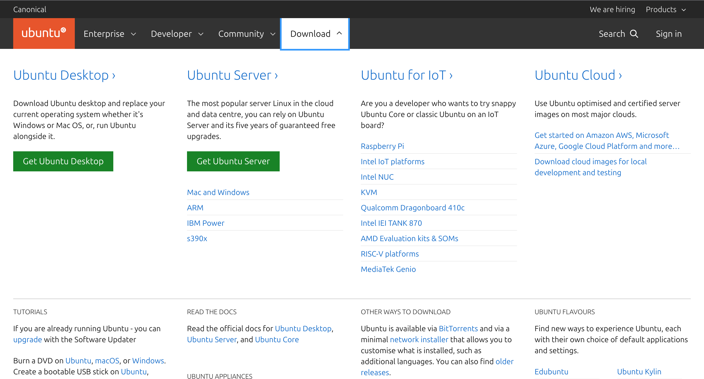
Después de descargar el archivo ISO, tendrás que crear una unidad USB de arranque, que se utilizará para instalar Ubuntu. Para ello, tendrás que utilizar un software de terceros, como Rufus. Te recomendamos que descargues la versión portátil, ya que no requerirá ninguna instalación y estará lista para usarse de inmediato.
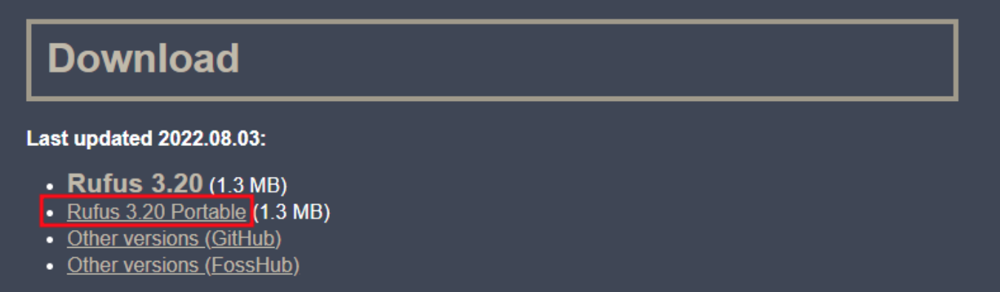
Sólo tienes que abrir el archivo ejecutable y Rufus se iniciará. Una vez hecho esto, asegúrate de que la unidad USB está conectada y selecciona el archivo ISO de Ubuntu. En cuanto a las opciones de formato, deja los valores por defecto del sistema de archivos y del tamaño del clúster y haz clic en START. Dale unos diez minutos y la unidad USB de arranque estará lista.
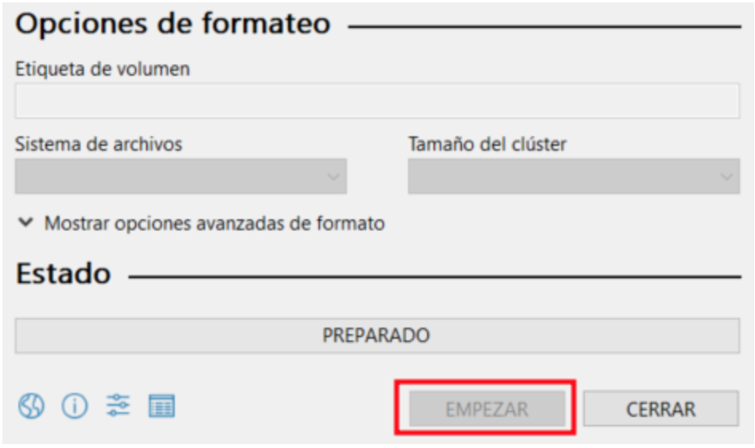
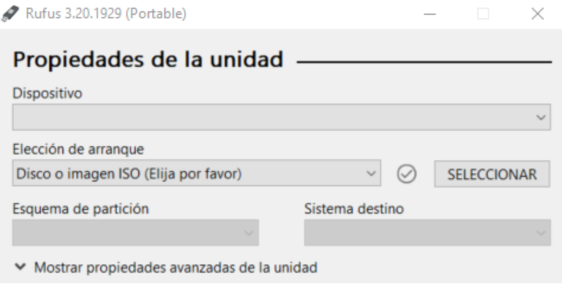
Con la unidad de arranque de Ubuntu lista, procede a la instalación. Para ello, reinicia tu ordenador y accede a la BIOS. Normalmente, se puede acceder a la BIOS pulsando las teclas DEL o F2 del teclado siempre que aparezca una pantalla similar
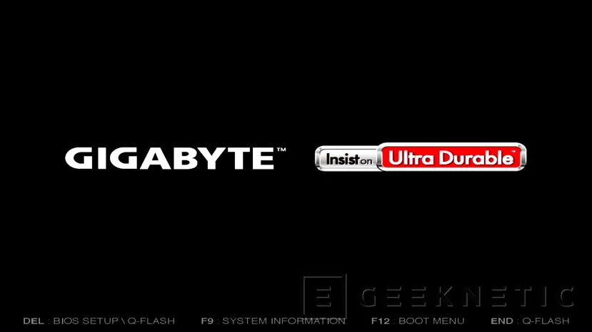
Una vez en la BIOS, busca el menú de arranque y configura el orden para que la unidad USB sea la primera de la lista. Debería tener este aspecto:
Ahora guarda y cierra la BIOS. Dale unos minutos y el instalador de Ubuntu debería iniciarse. Una vez que comience, pasa a la siguiente sección sobre el instalador de Ubuntu.
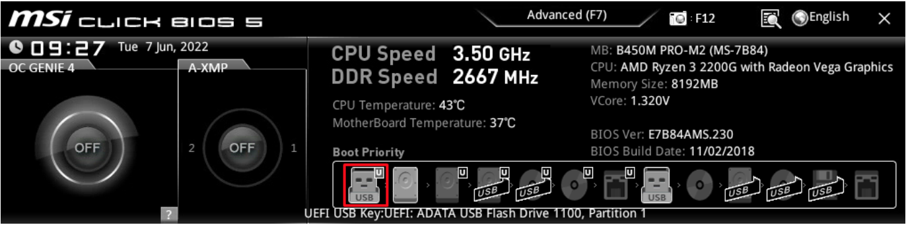
Cuando el sistema se inicie en la pantalla de instalación del nuevo Ubuntu, selecciona la opción Probar o Instalar Ubuntu.
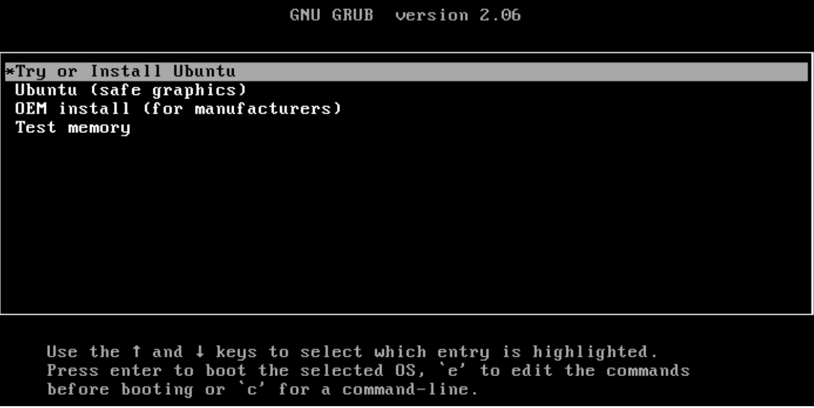
Selecciona el idioma del instalador y elige la opción Instalar Ubuntu en el siguiente paso. También hay una opción para probar Ubuntu. En ese caso, ninguno de los archivos del disco duro se borrará. Sin embargo, vamos a proceder a la instalación completa.
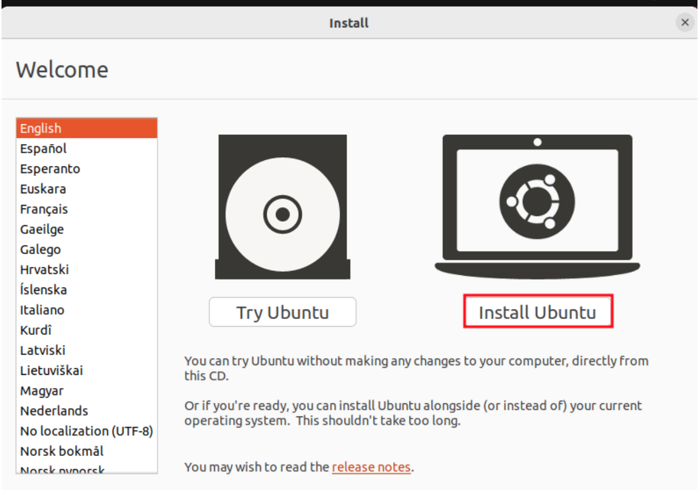
Elige la disposición de teclado preferida.
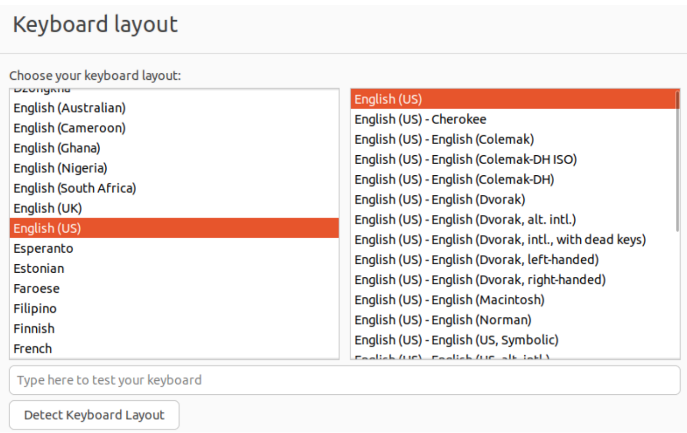
Ahora puedes elegir entre las instalaciones Normal y Mínima. Te recomendamos que te quedes con la Instalación normal, ya que ofrece más utilidades y paquetes de software. Además, selecciona la opción de descargar actualizaciones para obtener la última versión posible.
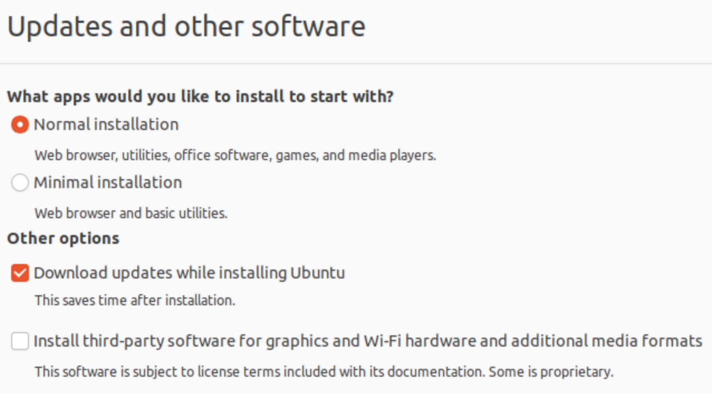
Para el tipo de instalación, elige Borrar disco e instalar Ubuntu.
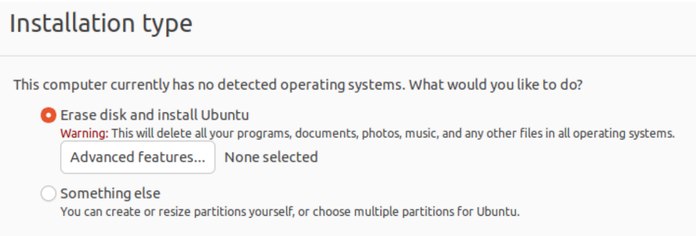
Cuando se te pregunte por la partición, haz clic en Continuar.
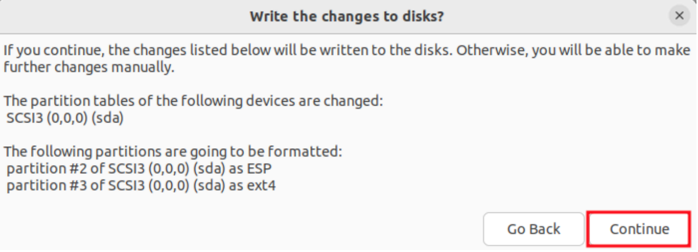
A continuación, selecciona la zona horaria.
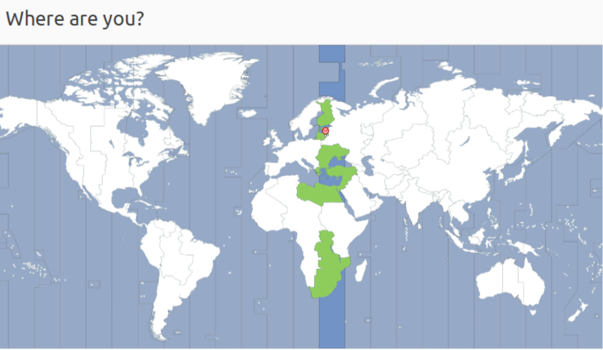
Por último, rellena el nombre, el nombre de usuario y la contraseña.
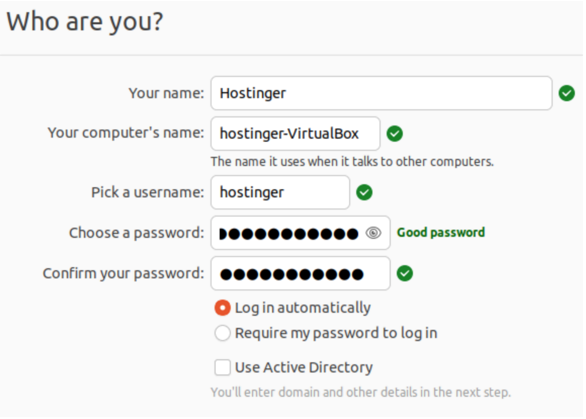
Después de hacer clic en continuar, se iniciará la instalación de Ubuntu. Dale unos 20 minutos y reinicia el ordenador una vez terminada la instalación. Una vez que el ordenador arranque, deberías ver la pantalla de bienvenida por defecto. Y listo habrás instalado Ubuntu correctamente.